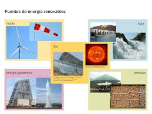

Tecnología Informatica Periodo 1

¿Qué son las energias renovables?
Se denomina “energías renovables” a aquellas fuentes energéticas basadas en la utilización del sol, el viento, el agua o la biomasa vegetal o animal -entre otras-.
Se caracterizan por no utilizar combustibles fósiles –como sucede con las energías convencionales-, sino recursos capaces de renovarse ilimitadamente.
Su impacto ambiental es de menor magnitud dado que además de no emplear recursos finitos, no generan contaminantes.
Sus beneficios van desde la diversificación de la matriz energética del país hasta el fomento a la industria nacional; y desde el desarrollo de las economías regionales hasta el impulso al turismo.
Por el contrario, los combustibles fósiles, como el carbón, el petróleo y el gas, constituyen fuentes de energía no renovables que tardan cientos de millones de años en formarse. Los combustibles fósiles producen la energía al quemarse, lo que provoca emisiones dañinas en forma de gases de efecto invernadero, como el dióxido de carbono.
La generación de energías renovables produce muchas menos emisiones que la quema de combustibles fósiles. Una transición de los combustibles fósiles, los cuales representan en la actualidad la mayor parte de las emisiones, a energías renovables resulta fundamental para abordar la crisis producida por el cambio climático.
Hoy en día, las energías renovables son más baratas en la mayoría de los países y generan tres veces más puestos de trabajo que los combustibles fósiles.
Tipos de energia renovable
Energía solar: Esta energía la que, mediante conversión a calor o electricidad, se aprovecha de la radiación proveniente del sol. Nuestro planeta recibe del sol una gran cantidad de energía por año de la cual solo un 40% es aprovechable, cifra que representa varios cientos de veces la energía que se consume actualmente en forma mundial; es una fuente de energía descentralizada, limpia e inagotable que se puede transformar en electricidad de dos maneras:
Energía solar térmica: utiliza una parte del espectro electromagnético de la energía del sol para producir calor. La transformación se realiza mediante el empleo de colectores térmicos. Su principal componente es el captador, por el cual circula un fluido que absorbe la energía radiada del sol.
Energía solar fotovoltaica: utiliza la otra parte del espectro electromagnético de la energía del sol para producir electricidad. Basada en el efecto fotoeléctrico, la transformación se realiza por medio de celdas fotovoltaicas, que son semiconductores sensibles a la luz solar que provoca una circulación de corriente eléctrica entre sus 2 caras. Un conjunto de celdas conectadas entre sí, componen módulos o paneles solares fotovoltaicos.
Energía eólica La energía eólica hace referencia a aquellas tecnologías y aplicaciones en que se aprovecha la energía cinética del viento, convirtiéndola a energía mecánica o eléctrica. Existen dos tipos principales de máquinas que aprovechan la energía contenida en el viento: los molinos, que se utilizan fundamentalmente para bombeo mecánico de agua (algo muy común en el campo), y los aerogeneradores, equipos especialmente diseñados para producir electricidad. Las provincias de Santa Cruz, Chubut, Río Negro y Buenos Aires concentran el mayor potencial eólico argentino.
Biomasa y biogás: la energía que se extrae de materia orgánica.

Energía no renovable
En la transición energética se repiten términos como verde, limpia, renovable o sostenible para identificar energías que no se agotan cuando se usan. Por otro lado, estarían las energías no renovables (carbón, gas y petróleo), que han permitido un desarrollo sin precedentes, pero han generado un problema climático a escala global. Y en medio, los combustibles nucleares y la madera. Como es evidente, el principal inconveniente en todos los tipos de energía no renovable reside en los altos niveles de contaminación que emiten a la atmósfera, tanto en su producción como en su uso. Por consiguiente, tienen una gran incidencia en el cambio climático, junto con la generación de residuos no biodegradables.
¿Cuáles son las energías no renovables?
-
Combustibles fósiles o Petróleo
- El carbón :El carbón es un tipo de roca hecha específicamente de carbono.
- Aceite: Es una mezcla de compuestos orgánicos. También se formó a partir de materia orgánica. En condiciones normales de presión y temperatura, es un líquido bituminoso.
- Gas natural: El gas natural es una mezcla de hidrocarburos de gases ligeros de origen natural. Su principal compuesto es el metano.
-
Combustibles fósiles o Petróleo
- Gas natural: El gas natural es una mezcla de hidrocarburos de gases ligeros de origen natural. Su principal compuesto es el metano.
- Combustibles nucleares (uranio y plutonio) utilizados en las centrales nucleares.
Hay dos tipos de energía no renovable (o agotable)
Los combustibles fósiles se formaron a partir de materia orgánica. Esta materia ha estado expuesta a altas temperaturas y presiones durante millones de años antes de transformarse en una de las siguientes formas: